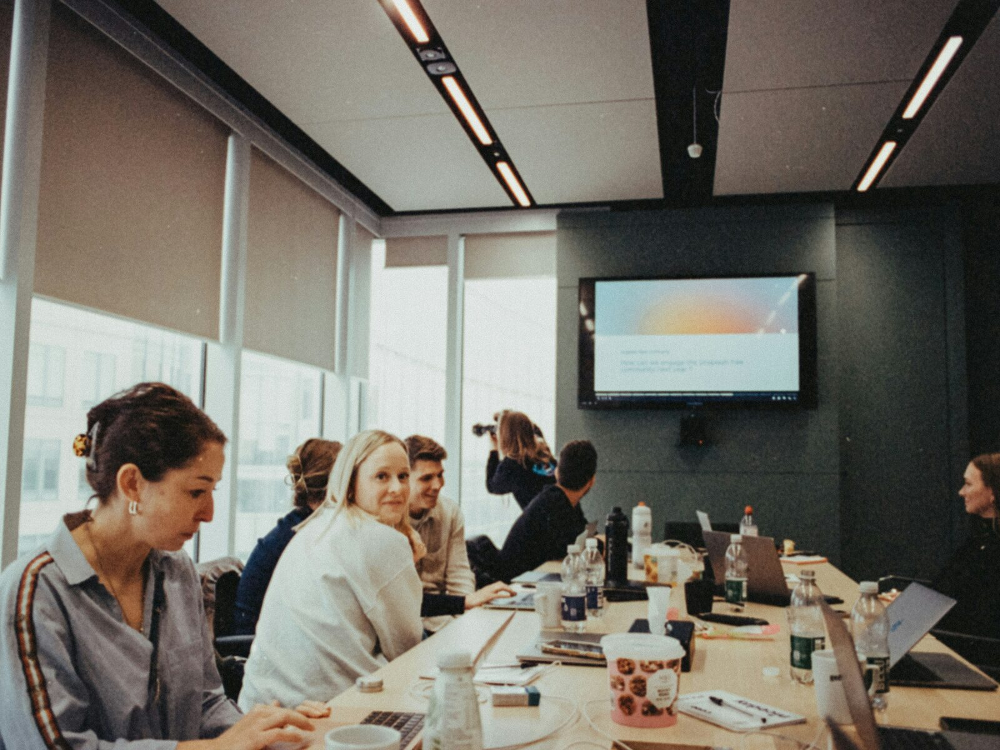

Empresas
Gestão contábil completa para trazer segurança, organização e espaço para o seu negócio crescer.
Saiba mais →Sem limites para aprender. Sempre prontos para servir.
Soluções contábeis para empresas, produtores rurais e pessoas físicas, com conhecimento, cuidado e proximidade.
Não atendemos apenas documentos e obrigações. Atendemos pessoas, sonhos, empresas e histórias que merecem ser cuidadas com responsabilidade.
Gestão contábil completa para trazer segurança, organização e espaço para o seu negócio crescer.
Saiba mais →Soluções especializadas para cuidar da atividade rural, da organização dos documentos e das decisões do campo.
Saiba mais →Orientação contábil e fiscal para você e sua família, com clareza, tranquilidade e acolhimento.
Saiba mais →
Imagem ilustrativa — substituir por uma foto real da equipeA tecnologia facilita processos. Mas são a escuta, o cuidado e a responsabilidade que constroem confiança.
Quando ainda não temos uma resposta, pesquisamos. Quando precisamos evoluir, estudamos. Quando o cliente precisa de apoio, estamos presentes.
Escutamos antes de orientar. Cada cliente possui uma realidade, uma história e necessidades próprias.
Explicamos com clareza. O conhecimento só é útil quando traz segurança para quem precisa decidir.
Crescemos juntos. Investimos nas pessoas da equipe para cuidar cada vez melhor das pessoas que confiam em nós.
Trabalhamos de forma integrada para que o cliente não se sinta perdido entre departamentos, prazos e obrigações.
Conte seu desafio →Organização, demonstrações e informações para decisões mais conscientes.
Apuração, cumprimento de obrigações e orientação responsável.
Cuidado com as rotinas trabalhistas e com as pessoas da sua empresa.
Livro Caixa, escrituração, organização documental e apoio especializado.
Estudo do problema e busca pelo caminho mais seguro para cada situação.
Capacitamos continuamente a equipe por meio de cursos, treinamentos, troca de experiências e tecnologia. Cada novo conhecimento se transforma em mais segurança e cuidado para o cliente.
Conte sua necessidade, seu momento ou o desafio que está enfrentando. A Acácia está pronta para ouvir, estudar e buscar a melhor orientação.